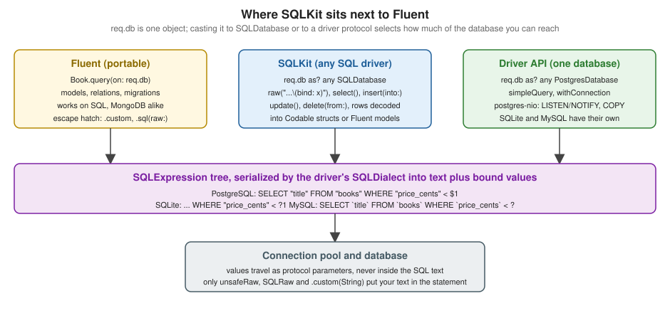

SQLKit and Raw SQL
|
This content was generated with the assistance of AI and should be verified against the official documentation before being relied on in production. |
This page is written against Vapor 4.122.2 on Swift 6.4 (the package builds in the Swift 6 language mode with tools
version 6.3, as the official template does; Vapor 4.122.2 itself needs tools version 6.0), with Fluent 4.13.0, FluentKit
1.57.0, SQLKit 3.36.0, fluent-sqlite-driver 4.9.0 and fluent-postgres-driver 2.14.0, checked on 2026-10-17. Every Swift
listing on this page was compiled in the Swift 6 language mode with zero warnings in a scratch package that also enables
the template’s upcoming-feature flags (ExistentialAny, InternalImportsByDefault, MemberImportVisibility). The
SQLKit code was run against SQLite (an in-memory database) and exercised with curl; the output shown is captured from
those runs, including the SQL text and bound values that the driver logged at debug level. The PostgreSQL code (the
PostgresDatabase cast, pg_notify, LISTEN and the JSONB query) was only compiled: it was not run against a live
PostgreSQL server, and the behaviour described for it comes from the sources of postgres-nio 1.33 and
fluent-postgres-driver 2.14 and from the official documentation. Vapor 5 is at 5.0.0-beta.4 and is not released yet;
SQLKit itself is a separate package that does not change with Vapor’s major version, and where Vapor 5 changes how you
reach it that is noted. The page extends the Bookshelf service of the earlier pages of this section, using the
canonical model set (authors, books, reviews, users, tags, book_tag, loans); the one page-local addition
is an index created by a migration. Swift itself is covered by the Swift
Reference, and async functions, Sendable and actors by
Async/Await and Tasks and
Actors, Isolation and Sendable. The same topic in
Rust is in Databases with SQLx, and transactions as a general pattern in
Migrations and Transactions. Models, relations and the Fluent query
builder are covered by Fluent Overview and Database Drivers,
Fluent Models, Fluent Relations and
Fluent Queries and Pagination; this page starts where they stop.
Why leave Fluent for SQL
Fluent is a portable query builder over models. That portability is also its limit: a model query always selects whole rows of one table (plus eagerly loaded relations), and anything a particular database does better than the lowest common denominator has no spelling in the Fluent API. Typical reasons to drop to SQL in a service like Bookshelf:
-
Reports: an author leaderboard with
GROUP BY,HAVING, several joins and computed columns returns rows that are no model. Doing it in Fluent means loading models and aggregating in Swift. -
Set-based writes:
UPDATE books SET price_cents = price_cents * 90 / 100 WHERE ...changes thousands of rows in one statement, where Fluent would load, mutate and save each model (or make a.setquery per field). -
Database features:
RETURNING,ON CONFLICT, window functions, common table expressions, full-text search, JSONB operators,LISTENandNOTIFY, advisory locks. -
Schema details: partial or expression indexes, triggers, extensions, enum alterations.
Fluent already contains the escape hatches that the official documentation names, and it is built on SQLKit for every SQL driver, so the next layer down is the same code path Fluent uses: when you call SQLKit you are not bypassing Fluent’s connection pool, logging, transaction or event loop, you are using the same database object through another interface.
SQLKit, FluentSQL and the drivers
Four packages are involved, and knowing which is which explains most import errors:
| Package (version on this page) | Role |
|---|---|
|
The database-independent SQL library: the |
|
The bridge. It adds the Fluent-aware pieces on top of SQLKit: |
|
Per-database SQLKit drivers: the dialect (quoting, placeholders, supported syntax), the connection and the row type. They are dependencies of the Fluent drivers. |
|
Fluent drivers. Their database objects conform to both |
MongoDB is the exception: fluent-mongo-driver is not SQL, so req.db as? any SQLDatabase is nil there, and this
page does not apply to it (see MongoDB).
The Package.swift dependency is the same as for Fluent; SQLKit arrives transitively through the Fluent driver. Add it
as a direct dependency only when the target imports SQLKit itself and you want the build to fail loudly if the
transitive dependency goes away:
// swift-tools-version:6.3
import PackageDescription
let package = Package(
name: "App",
platforms: [.macOS(.v13)],
dependencies: [
.package(url: "https://github.com/vapor/vapor.git", from: "4.122.2"),
.package(url: "https://github.com/vapor/fluent.git", from: "4.13.0"),
.package(url: "https://github.com/vapor/fluent-sqlite-driver.git", from: "4.9.0"),
.package(url: "https://github.com/vapor/fluent-postgres-driver.git", from: "2.14.0"),
.package(url: "https://github.com/vapor/sql-kit.git", from: "3.36.0"),
],
targets: [
.executableTarget(name: "App", dependencies: [
.product(name: "Vapor", package: "vapor"),
.product(name: "Fluent", package: "fluent"),
.product(name: "FluentSQLiteDriver", package: "fluent-sqlite-driver"),
.product(name: "FluentPostgresDriver", package: "fluent-postgres-driver"),
.product(name: "SQLKit", package: "sql-kit"),
]),
]
)(The scratch package for this page pins every package with exact:; from: is the usual choice in an application.)
With MemberImportVisibility enabled, which the official template turns on, each file must import the module
that declares what it uses: a file that calls req.db needs import Fluent even though FluentSQL is imported,
because db is declared in the Fluent module. The compiler says "property 'db' is not available due to missing import
of defining module 'Fluent'".
Where it sits
SQLKit is not a stage of the request pipeline. A handler asks the request for its database, and the same pooled connection machinery that serves Fluent queries serves SQLKit statements. What changes is only which interface you hold.

Three consequences are used throughout the page:
-
the object behind
req.dbis one value that conforms to several protocols; "casting" selects an interface, it does not open a second connection; -
SQLKit statements serialize through the driver’s
SQLDialect, so the same builder code produces"title"quoting and?1placeholders on SQLite,"title"and$1on PostgreSQL and backquotes and?on MySQL, while a string of raw SQL is sent as written, in that database’s own dialect; -
values you bind never travel inside the SQL text: they are protocol parameters. That is what makes SQLKit safe by default and what
unsafeRawturns off.
Getting a SQLDatabase
The official documentation shows the cast (here with the Bookshelf authors table, and the Fluent fallback for a
non-SQL driver):
import Fluent
import FluentSQL
import Vapor
struct AuthorName: Decodable {
var name: String
}
func authorNames(_ req: Request) async throws -> [String] {
if let sql = req.db as? any SQLDatabase {
// The underlying database driver is SQL.
let authors = try await sql.raw("SELECT name FROM authors ORDER BY name").all(decoding: AuthorName.self)
return authors.map(\.name)
} else {
// The underlying database driver is _not_ SQL.
return try await Author.query(on: req.db).sort(\.$name).all().map(\.name)
}
}Source: Vapor docs: Fluent advanced, SQL
Any Fluent Database can be cast: req.db, app.db, req.db(.psql) for a named database, the database parameter of
a migration and the database handed to a transaction closure. In Swift 6 with ExistentialAny the protocol is written
any SQLDatabase (the docs' older spelling as? SQLDatabase produces an error under that flag). Because a handler
needs this all the time and the cast can fail, wrap it once. The listing also defines the two Codable structs used by
later examples; they are not Fluent models, because a report row has no table.
import Fluent
import FluentSQL
import Vapor
extension Request {
/// The request's database as a SQLKit database, or a 500 when the configured driver is not SQL.
var sql: any SQLDatabase {
get throws {
guard let sql = self.db as? any SQLDatabase else {
throw Abort(.internalServerError, reason: "The default database is not a SQL database")
}
return sql
}
}
}
/// A row of the reporting query: it is not a Fluent model, so it is a plain Codable struct.
struct BookRow: Content {
var id: UUID
var title: String
var author: String
var priceCents: Int
var publishedYear: Int
enum CodingKeys: String, CodingKey {
case id, title, author
case priceCents = "price_cents"
case publishedYear = "published_year"
}
}
struct AuthorStats: Content {
var author: String
var books: Int
var reviews: Int
var averageRating: Double?
enum CodingKeys: String, CodingKey {
case author, books, reviews
case averageRating = "average_rating"
}
}
struct PriceChange: Content {
var id: UUID
var priceCents: Int
enum CodingKeys: String, CodingKey {
case id
case priceCents = "price_cents"
}
}Things the listing relies on:
-
SQLDatabaseisSendable, so the value can cross isolation boundaries and be captured by@Sendableclosures. Theany SQLDatabaseyou obtain is a small struct that wraps the Fluent driver’s database together with the request’s logger, so the query log lines carry the request id automatically (visible in the logs below). -
A non-SQL driver makes the cast fail; failing with a 500
Abortis right, because it is a configuration error and not a client error. If the service must run on both a SQL driver and MongoDB, keep the SQL code behind a protocol and give the Mongo implementation its own. -
Contenton the structs gives JSON encoding for the response; decoding a row only needsDecodable. -
CodingKeysmap snake_case columns to Swift names. SQLKit also has aSQLRowDecoderkey strategy (convertFromSnakeCase), covered below.
Raw SQL with SQLQueryString
db.raw(_:) takes a SQLQueryString, a type that conforms to ExpressibleByStringInterpolation. A string literal
passed to raw becomes a SQLQueryString, and each \(...) interpolation inside it is not string interpolation at
all: it is a call to one of the custom appendInterpolation methods of SQLQueryString, which decide how the value is
added to the statement. This is the entire safety mechanism of raw SQL in SQLKit, so the table lists all of them:
| Interpolation | Effect |
|---|---|
|
Adds a placeholder ( |
|
One placeholder per element, separated by commas: for |
|
A quoted identifier ( |
|
A list of quoted identifiers. |
|
Writes a number or string into the statement text as a SQL literal (strings are quoted and escaped with the dialect’s rules). Prefer |
|
A list of literals. |
|
The dialect’s boolean literal. |
|
Embeds any |
|
Pastes |
In older SQLKit releases \(raw:) was the name of what is now \(unsafeRaw:); the old spelling is still present in
3.36.0 as a deprecated overload that points to the new name, and the rename exists so the dangerous one is visible in
review.
The first route is a search by title. The user’s text becomes a bound value; the % wildcards are added in Swift, to
the value, not in the SQL:
import Fluent
import FluentSQL
import Vapor
func searchRoutes(_ app: Application) {
let sql = app.grouped("sql")
// Raw SQL with safe interpolation: \(bind:) turns the value into a bound parameter.
sql.get("search") { req async throws -> [BookRow] in
let q = try req.query.get(String.self, at: "q")
return try await req.sql.raw("""
SELECT b.id, b.title, a.name AS author, b.price_cents, b.published_year
FROM books b JOIN authors a ON a.id = b.author_id
WHERE b.title LIKE \(bind: "%" + q + "%")
ORDER BY b.title
""").all(decoding: BookRow.self)
}
}Source: sql-kit README
Running it (the first call is the search for The):
$ curl -s 'http://localhost:8091/sql/search?q=The'
[{"price_cents":1499,"title":"The Dispossessed","published_year":1974,"author":"Ursula K. Le Guin","id":"460CCD56-7622-47A8-9200-2A6C6918CA7D"},{"price_cents":1599,"title":"The Fellowship of the Ring","published_year":1954,"author":"J. R. R. Tolkien","id":"D404897B-6E7E-44D0-997E-8A78557F0183"},{"price_cents":1299,"title":"The Hobbit","published_year":1937,"author":"J. R. R. Tolkien","id":"F737BF67-7EEB-4932-A2F2-F14F09EF487A"}]With --log debug the driver logs what it sent, and the value is a parameter, not part of the text:
[ DEBUG ] Executing query [binds: [%Hobbit%], database-id: sqlite, request-id: 0D879DF8-..., sql: SELECT b.id, b.title, a.name AS author, b.price_cents, b.published_year ...Two details worth knowing:
-
rawis a builder, like the others: nothing is sent until a terminal call (run(),all(),first(),all(decoding:),first(decoding:)) is awaited. Araw(...)whose result is dropped silently does nothing. -
rawalso has an overload taking a plainStringvariable. It is deprecated, because aStringthat you built yourself is exactly what injection looks like. Only a string literal (or aSQLQueryString) is accepted without a warning; keep it that way.
Decoding rows
A SQLRow is one result row. The fetching terminals give you either rows or decoded values:
| Call | Result |
|---|---|
|
Executes and discards rows (inserts, updates, DDL without |
|
|
|
Decodes each row with |
|
One column of every row, for scalar queries ( |
|
Streams rows to a closure without building the array, for large result sets. |
|
One column of one row. |
|
A whole row into a |
Columns are matched to coding keys by name, which is why the report queries alias computed columns (AVG(r.rating) AS
average_rating) and why BookRow declares CodingKeys. An alternative to CodingKeys is a decoder strategy; the
all(decoding:prefix:keyDecodingStrategy:userInfo:) overloads accept .convertFromSnakeCase, which maps price_cents
to priceCents. CodingKeys is explicit and survives renames; the strategy is shorter and fails at runtime when a
column is missing.
Decoding into Fluent models goes through decode(fluentModel:): the column names must be the model’s field keys, which
SELECT * from the model’s table satisfies. This is useful for a hand-written query that selects whole rows, such as
a query with a dialect-specific WHERE:
import Fluent
import FluentSQL
import Vapor
func modelRoutes(_ app: Application) {
let sql = app.grouped("sql")
// SQL rows decoded into a Fluent model: column names must be the model's field keys.
sql.get("published-models") { req async throws -> [String] in
let rows = try await req.sql.raw("""
SELECT * FROM books WHERE status = \(bind: BookStatus.published) ORDER BY title
""").all()
return try rows.map { try $0.decode(fluentModel: Book.self).title }
}
}The model comes back with its fields filled and exists set, so save() on it issues an UPDATE. Relations are not
loaded ($author.value is nil); eager loading is a Fluent feature, not a SQL one. With BookStatus.published
interpolated by bind:, the enum is encoded as its String raw value, matching what Fluent stored.
Two behaviours of the SQLite driver show in the columns: Fluent’s .datetime columns are stored as REAL (seconds as
a floating-point number), and Date values you bind are encoded the same way, which is why due_at < \(bind: now) in
the transaction example compares correctly. UUIDs are stored as text. On PostgreSQL the same code uses native
timestamptz and uuid columns. Binding a Date and comparing it with a Fluent-created column works on both because
both sides are encoded by the same driver.
The query builders
For the shapes of statement you write often, builders are better than raw text: they quote identifiers for the dialect,
bind values automatically and compose, so a dynamic filter does not need string concatenation. The entry points are
methods on SQLDatabase:
| Entry point | Builder and main methods |
|---|---|
|
|
|
|
|
|
|
|
|
Schema builders (DDL). |
|
|
A where has several spellings; mixing them is the main source of compile errors. where("name", .equal, value) takes
a column name and an Encodable value and binds it. where(SQLColumn(...), .equal, SQLBind(value)) takes two
expressions (SQLExpression values), so a value has to be wrapped in SQLBind yourself (the compiler error "argument
type 'Int' does not conform to expected type 'SQLExpression'" is what you get when a bare Int is passed with an
SQLColumn). The comparison operators are SQLBinaryOperator values such as .equal, .lessThan,
.greaterThanOrEqual, .like, .in, .is.
The next route is a dynamic list: optional filters are added only when the client sent them, the sort column is chosen
from an allow-list and the direction is a typed value. It returns the BookRow struct from earlier.
import Fluent
import FluentSQL
import Vapor
struct BookQuery: Content {
var minYear: Int?
var maxPriceCents: Int?
var sort: String?
var descending: Bool?
}
func bookListRoutes(_ app: Application) {
let sql = app.grouped("sql")
// Builder: dynamic filters, an allow-listed sort column and a join.
sql.get("books") { req async throws -> [BookRow] in
let query = try req.query.decode(BookQuery.self)
let sortable: Set<String> = ["title", "price_cents", "published_year"]
let sortColumn = query.sort ?? "title"
guard sortable.contains(sortColumn) else {
throw Abort(.badRequest, reason: "Cannot sort by \(sortColumn)")
}
var select = try req.sql.select()
.column(SQLColumn("id", table: "books"))
.column(SQLColumn("title", table: "books"))
.column(SQLColumn("name", table: "authors"), as: "author")
.column(SQLColumn("price_cents", table: "books"))
.column(SQLColumn("published_year", table: "books"))
.from("books")
.join("authors", on: SQLColumn("author_id", table: "books"), .equal, SQLColumn("id", table: "authors"))
if let minYear = query.minYear {
select = select.where(SQLColumn("published_year", table: "books"), .greaterThanOrEqual, SQLBind(minYear))
}
if let maxPrice = query.maxPriceCents {
select = select.where(SQLColumn("price_cents", table: "books"), .lessThanOrEqual, SQLBind(maxPrice))
}
let direction: SQLDirection = (query.descending ?? false) ? .descending : .ascending
return try await select
.orderBy(SQLColumn(sortColumn, table: "books"), direction)
.all(decoding: BookRow.self)
}
}Output and the SQL that the builder produced (note ?1, ?2 and the join the builder wrote):
$ curl -s 'http://localhost:8091/sql/books?minYear=1950&maxPriceCents=1500'
[{"id":"AEB16D3C-A724-4CAF-80A9-CA10C121FBBD","author":"Ursula K. Le Guin","price_cents":1199,"published_year":1968,"title":"A Wizard of Earthsea"},{"id":"EE1CDF1E-F183-4AD5-AB4B-A4BB276CDE5A","author":"Ursula K. Le Guin","price_cents":1499,"published_year":1974,"title":"The Dispossessed"}]
$ curl -s -w ' [%{http_code}]\n' 'http://localhost:8091/sql/books?sort=title;DROP'
{"error":true,"reason":"Cannot sort by title;DROP"} [400]binds: [1950, 1500], sql: SELECT "books"."id", "books"."title", "authors"."name" AS "author", "books"."price_cents", "books"."published_year" FROM "books" INNER JOIN "authors" ON "books"."author_id" = "authors"."id" WHERE "books"."published_year" >= ?1 AND "books"."price_cents" <= ?2 ORDER BY "books"."title" ASCThe sort column is the one thing in the statement that is not a bound value: orderBy(SQLColumn(sortColumn, ...))
quotes it as an identifier, which stops it from becoming a second statement, but a client could still name any column,
including ones you do not want to expose. Hence the allow-list. Identifiers cannot be bound in SQL, so an allow-list (a
Set or an enum) is the correct control.
Aggregations are where raw SQL is often clearer than the builder. The leaderboard below joins three tables and groups;
the HAVING threshold is bound:
import Fluent
import FluentSQL
import Vapor
func reportRoutes(_ app: Application) {
let sql = app.grouped("sql")
// Aggregation that the Fluent query builder cannot express in one statement.
sql.get("authors", "stats") { req async throws -> [AuthorStats] in
try await req.sql.raw("""
SELECT a.name AS author,
COUNT(DISTINCT b.id) AS books,
COUNT(r.id) AS reviews,
AVG(r.rating) AS average_rating
FROM authors a
LEFT JOIN books b ON b.author_id = a.id
LEFT JOIN reviews r ON r.book_id = b.id
GROUP BY a.id, a.name
HAVING COUNT(DISTINCT b.id) >= \(bind: 1)
ORDER BY average_rating DESC, a.name
""").all(decoding: AuthorStats.self)
}
}Source: sql-kit README
$ curl -s http://localhost:8091/sql/authors/stats
[{"reviews":3,"average_rating":4,"author":"J. R. R. Tolkien","books":2},{"reviews":2,"average_rating":4,"author":"Ursula K. Le Guin","books":2}](Unpublished Author has no books and is excluded by the HAVING clause. JSON object keys come out in no particular
order because Content encodes through a dictionary-backed encoder; clients must not depend on it. average_rating is
4 and not 4.0 because JSON has one number type.)
Writing: insert, update, delete, returning and upsert
Writes use the same builders. update and delete without a where affect every row, exactly as in SQL; SQLKit does
not protect you from that. The discount route is a set-based update with an expression on the right-hand side and
RETURNING:
import Fluent
import FluentSQL
import Vapor
func discountRoutes(_ app: Application) {
let sql = app.grouped("sql")
// UPDATE ... RETURNING through the builder, with an expression on the right-hand side.
sql.post("books", ":bookID", "discount") { req async throws -> PriceChange in
let bookID = try req.parameters.require("bookID", as: UUID.self)
let percent = try req.query.get(Int.self, at: "percent")
guard (1...90).contains(percent) else { throw Abort(.badRequest, reason: "percent must be 1...90") }
let changed = try await req.sql.update("books")
.set(SQLColumn("price_cents"), to: SQLQueryString("price_cents * \(literal: 100 - percent) / 100"))
.where("id", .equal, bookID)
.returning("id", "price_cents")
.first(decoding: PriceChange.self)
guard let changed else { throw Abort(.notFound) }
return changed
}
}Source: sql-kit README, update
$ curl -s -X POST 'http://localhost:8091/sql/books/D30B9415-DD3E-4132-8905-4ED8672E1663/discount?percent=10'
{"id":"D30B9415-DD3E-4132-8905-4ED8672E1663","price_cents":1169}binds: [D30B9415-DD3E-4132-8905-4ED8672E1663], sql: UPDATE "books" SET "price_cents" = price_cents * 90 / 100 WHERE "id" = ?1 RETURNING "id", "price_cents"1299 * 90 / 100 is 1169 in integer arithmetic (the fraction is truncated, as in the database), which is the number
shown. returning is available on insert, update and delete when the dialect’s supportsReturning is true: SQLite 3.35
and later, PostgreSQL and MariaDB 10.5 and later. MySQL does not have it, and the builder will produce SQL the server
rejects; read db.dialect.supportsReturning when a service must run on both.
An INSERT can take an Encodable value as the row with model(_:); the property names are the column names. Despite
the name, this is not Fluent’s Model: the SQLKit documentation says Fluent models are not compatible with model(),
so declare a small Encodable struct for the columns you write. Combined with onConflict this gives an upsert, in a
single statement that returns the id of either the new row or the existing one:
import Fluent
import FluentSQL
import Vapor
/// An Encodable value (not a Fluent model) whose property names are the column names.
struct NewTag: Encodable {
var id: UUID
var name: String
}
struct TagID: Content {
var id: UUID
}
func tagRoutes(_ app: Application) {
let sql = app.grouped("sql")
// Upsert: INSERT ... ON CONFLICT DO UPDATE ... RETURNING, with an Encodable value as the row.
sql.put("tags") { req async throws -> TagID in
let name = try req.query.get(String.self, at: "name")
let row = try await req.sql.insert(into: "tags")
.model(NewTag(id: UUID(), name: name))
.onConflict(with: "name") { $0.set(excludedValueOf: "name") }
.returning("id")
.first(decoding: TagID.self)
guard let row else { throw Abort(.internalServerError) }
return row
}
// A plain INSERT that violates the unique index: the driver error says it is a constraint failure.
sql.post("tags") { req async throws -> HTTPStatus in
let name = try req.query.get(String.self, at: "name")
do {
try await req.sql.insert(into: "tags").model(NewTag(id: UUID(), name: name)).run()
} catch let error as any DatabaseError where error.isConstraintFailure {
throw Abort(.conflict, reason: "Tag \(name) already exists")
}
return .created
}
}$ for m in PUT PUT POST POST; do curl -s -w ' [%{http_code}]\n' -X $m 'http://localhost:8091/sql/tags?name=fantasy'; done
{"id":"40465C01-2F7F-4F70-9C5D-5F84B4DEB9D3"} [200]
{"id":"40465C01-2F7F-4F70-9C5D-5F84B4DEB9D3"} [200]
{"error":true,"reason":"Tag fantasy already exists"} [409]
{"error":true,"reason":"Tag fantasy already exists"} [409]The first PUT inserts; the second hits the unique index on name, takes the DO UPDATE branch (a no-op assignment,
so that RETURNING yields the existing row) and answers with the same id. The POST handler does a plain INSERT and
turns the unique violation into a 409. The generated SQL was
INSERT INTO "tags" ("id", "name") VALUES (?1, ?2) ON CONFLICT ("name") DO UPDATE SET "name" = EXCLUDED."name" RETURNING "id". ignoringConflicts(with:) (DO NOTHING) is the alternative when you do not need the id; it returns no row on a conflict, so
first(decoding:) would be nil.
The catch clause uses Fluent’s DatabaseError protocol (isSyntaxError, isConstraintFailure, isConnectionClosed),
which the SQLite, PostgreSQL and MySQL driver error types conform to, so one catch serves all three databases. Without
that check the error would escape as a 500 whose log line contains the driver’s text. It is the same technique used with
Fluent queries; see Error Handling for turning errors into responses.
Multi-row inserts and the IN list use the same binding mechanism. binds: expands to one placeholder per element:
import Fluent
import FluentSQL
import Vapor
func statusRoutes(_ app: Application) {
let sql = app.grouped("sql")
// IN (...) with one bound parameter per value.
sql.get("by-status") { req async throws -> [String] in
let statuses = try req.query.get([String].self, at: "status")
guard !statuses.isEmpty else { throw Abort(.badRequest) }
struct Row: Decodable { var title: String }
let rows = try await req.sql.raw("SELECT title FROM books WHERE status IN (\(binds: statuses)) ORDER BY title")
.all(decoding: Row.self)
return rows.map(\.title)
}
}$ curl -s 'http://localhost:8091/sql/by-status?status=draft&status=archived'
["The Dispossessed"]The statement was SELECT title FROM books WHERE status IN (?1, ?2) ORDER BY title with binds: [draft, archived]. An
empty list would produce IN (), which is a syntax error in most databases, hence the guard. The number of bound
parameters is limited by the database (SQLite’s default SQLITE_MAX_VARIABLE_NUMBER is 32766 since 3.32, PostgreSQL’s
protocol allows 65535); a client-supplied list should be bounded by validation before it gets here.
Transactions and sessions
Fluent owns the transaction: req.db.transaction { ... } checks one connection out of the pool, begins, runs the
closure and commits or rolls back. The database passed to the closure is the transaction’s database, and it is also a
SQLDatabase, so the SQLKit statements issued on it run inside the transaction. The important rule is the reverse one:
a statement issued on req.db or on a SQLDatabase obtained before the transaction runs on a different pooled
connection, outside it.
import Fluent
import FluentSQL
import Vapor
struct LoanClosed: Content {
var closed: Int
}
func loanRoutes(_ app: Application) {
let sql = app.grouped("sql")
// A transaction: the closure receives a Fluent Database that is also a SQLDatabase.
sql.post("loans", "close-overdue") { req async throws -> LoanClosed in
let now = Date()
let closed = try await req.db.transaction { tx async throws -> Int in
guard let sql = tx as? any SQLDatabase else { throw Abort(.internalServerError) }
let due = try await sql.raw("SELECT id FROM loans WHERE returned_at IS NULL AND due_at < \(bind: now)").all()
for row in due {
let id = try row.decode(column: "id", as: UUID.self)
try await sql.update("loans").set("returned_at", to: now).where("id", .equal, id).run()
}
return due.count
}
return LoanClosed(closed: closed)
}
}Source: Vapor docs: Fluent transactions
$ curl -s -w ' [%{http_code}]\n' -X POST http://localhost:8091/sql/loans/close-overdue
{"closed":1} [200]
$ curl -s -w ' [%{http_code}]\n' -X POST http://localhost:8091/sql/loans/close-overdue
{"closed":0} [200](The seed data has one overdue and one current loan.) The loop updates row by row to keep the example readable; in
practice one UPDATE loans SET returned_at = ... WHERE returned_at IS NULL AND due_at < ... does it in a single
statement, and the transaction is for work that must be atomic across several statements.
SQLDatabase has its own session API, withSession(_:), for the case where you hold a SQLKit database and need several
statements on one connection without a Fluent transaction, for example to set a session variable or take an advisory
lock and then query. The portable example below just reads twice on the same connection:
import SQLKit
import Vapor
struct Counts: Content {
var authors: Int
var books: Int
}
func countsOnOneConnection(_ db: any SQLDatabase) async throws -> Counts {
try await db.withSession { session in
let authors = try await session.raw("SELECT COUNT(*) AS n FROM authors")
.first(decodingColumn: "n", as: Int.self) ?? 0
let books = try await session.raw("SELECT COUNT(*) AS n FROM books")
.first(decodingColumn: "n", as: Int.self) ?? 0
return Counts(authors: authors, books: books)
}
}Source: SQLKit 3.36.0: SQLDatabase
Called from a route as countsOnOneConnection(try req.sql):
$ curl -s http://localhost:8091/sql/counts
{"books":4,"authors":3}The closure is @Sendable and the connection is returned to the pool when it finishes; do not let session escape. A
withSession is not a transaction (there is no BEGIN); on the PostgreSQL driver, when the database already holds a
connection (as the database inside a transaction does), withSession reuses that connection instead of checking out
another one (fluent-postgres-driver 2.14 sources).
Mixing SQL into Fluent
You do not have to choose one layer for a whole request. Fluent exposes the SQL escape hatches as .sql(...) helpers
in FluentSQL, usable wherever Fluent accepts a .custom value:
-
in
filter:.filter(.sql(embed: "LOWER(...) LIKE \(bind: x)")), a predicate with bound values;.sql(unsafeRaw:)for a literal fragment; -
in the schema builder:
.field("name", .sql(unsafeRaw: "VARCHAR(64)"), .required)and.sql(embed:)for data types, constraints and defaults (.sql(raw:)is the old name of.sql(unsafeRaw:), deprecated in fluent-kit 1.57.0); -
in the migration itself, by casting the migration’s
database.
import Fluent
import FluentSQL
import Vapor
func mixedRoutes(_ app: Application) {
let sql = app.grouped("sql")
// A raw predicate inside a Fluent query: the rest of the query stays portable and typed.
sql.get("fluent-mixed") { req async throws -> [String] in
let needle = try req.query.get(String.self, at: "q").lowercased()
let books = try await Book.query(on: req.db)
.filter(.sql(embed: "LOWER(\(ident: "title")) LIKE \(bind: "%" + needle + "%")"))
.sort(\.$title)
.all()
return books.map(\.title)
}
}$ curl -s 'http://localhost:8091/sql/fluent-mixed?q=THE%20h'
["The Hobbit"]The rest of the query stays Fluent: typed sort, model decoding, eager loading would all still work, and only the
predicate is SQL. When the underlying driver is not SQL the .sql(...) filter is meaningless; guard with
req.db is any SQLDatabase as the official documentation does.
Migrations are the other common place. Fluent’s schema builder covers tables, columns and unique constraints; an index on two columns, a partial index, a trigger or a Postgres extension is plain SQL (or SQLKit DDL builders) behind the same cast. The migration below is a page-local addition to the canonical set:
import Fluent
import FluentSQL
/// Page-local migration: an index that the Fluent schema builder cannot express portably is created with SQLKit.
struct AddBookReportingIndex: AsyncMigration {
func prepare(on database: any Database) async throws {
guard let sql = database as? any SQLDatabase else { return }
try await sql.create(index: "idx_books_author_year")
.on("books")
.column("author_id")
.column("published_year")
.run()
}
func revert(on database: any Database) async throws {
guard let sql = database as? any SQLDatabase else { return }
try await sql.drop(index: "idx_books_author_year").run()
}
}Source: Vapor docs: Fluent migrations
The migration log shows CREATE INDEX "idx_books_author_year" ON "books" ("author_id", "published_year"). Because the
guard ... else { return } makes it a no-op on a non-SQL driver, the same migration list can be shared with a MongoDB
configuration. Production schema changes have more to consider than syntax (locking, online index creation); the
Migrations & Schema and
Transactions, Model Middleware & Soft Delete
pages and the Axum page linked in the introduction cover the process side.
The dialect and the final SQL
Every SQLKit database exposes its dialect and can serialize any expression without running it, which is the quickest
way to see what a builder produces and the basis for unit-testing generated SQL:
import Fluent
import FluentSQL
import Vapor
func dialectRoutes(_ app: Application) {
let sql = app.grouped("sql")
// The dialect and the final SQL text: serialize() shows what the driver sends.
sql.get("explain") { req async throws -> [String: String] in
let db = try req.sql
let query = db.select().column("title").from("books")
.where("price_cents", .lessThan, 1500).where("status", .equal, "published").query
let (text, binds) = db.serialize(query)
return ["dialect": db.dialect.name, "sql": text, "binds": "\(binds)"]
}
}Source: SQLKit 3.36.0: SQLDialect
$ curl -s http://localhost:8091/sql/explain
{"dialect":"sqlite","sql":"SELECT \"title\" FROM \"books\" WHERE \"price_cents\" < ?1 AND \"status\" = ?2","binds":"[1500, \"published\"]"}On PostgreSQL the same builder code serializes with $1 and $2 and the server receives two parameters; on MySQL the
placeholders are ?. The dialect object also answers capability questions: supportsReturning, supportsIfExists,
enumSyntax, upsertSyntax, supportsAutoIncrement. Code that must run on more than one database branches on those
instead of on the driver type.
SQL injection safety
The preceding sections give the rule: values go through bind:, binds: or a builder’s Encodable parameters;
identifiers go through ident: or SQLColumn and come from an allow-list; unsafeRaw is for text you wrote. The cost
of breaking the rule is easiest to see by running it. This route is kept in the scratch project as the anti-pattern; it
interpolates the client’s text with unsafeRaw:
import Fluent
import FluentSQL
import Vapor
func unsafeRoutes(_ app: Application) {
let sql = app.grouped("sql")
// The anti-pattern, kept to show what it does: the client's text becomes part of the statement.
sql.get("unsafe-search") { req async throws -> [String] in
let q = try req.query.get(String.self, at: "q")
struct Row: Decodable { var title: String }
let rows = try await req.sql.raw("SELECT title FROM books WHERE title LIKE '%\(unsafeRaw: q)%' AND status = 'published'").all(decoding: Row.self)
return rows.map(\.title)
}
}Source: OWASP: SQL Injection
$ curl -s -G http://localhost:8091/sql/unsafe-search --data-urlencode "q=Hobbit"
["The Hobbit"]
$ curl -s -G http://localhost:8091/sql/unsafe-search --data-urlencode "q=zzz' OR status = 'draft' OR title LIKE '"
["The Hobbit","The Fellowship of the Ring","A Wizard of Earthsea","The Dispossessed"]
$ curl -s -G http://localhost:8091/sql/unsafe-search --data-urlencode "q=' UNION SELECT email FROM users --"
["A Wizard of Earthsea","The Dispossessed","The Fellowship of the Ring","The Hobbit","reader@example.com"]The driver logged the statements as binds: [] with the client’s quote characters part of the text, e.g. SELECT title
FROM books WHERE title LIKE '%' UNION SELECT email FROM users --%' AND status =
'published'. The second request returns the draft book that the status =
'published' condition was supposed to hide; the third returns every title and a column from a different table, a user’s email. The safe route with the same attack string:
$ curl -s -G http://localhost:8091/sql/search --data-urlencode "q=zzz' OR status = 'draft' OR title LIKE '"
[]The logged statement has binds: [%zzz' OR status = 'draft' OR title LIKE '%]: the quotes are data and nothing
matches.
A short checklist for reviewing code that touches SQLKit:
-
every
\(unsafeRaw:in the diff: the argument is a constant or one of a closed set of values you control; -
every
\(literal:with aString: could it bebind:? (literal:escapes with the dialect’s rules, which is correct but a second line of defence at best); -
every
\(ident:orSQLIdentifier/SQLColumnwhose name came from a request: is it checked against an allow-list?; -
no
raw(someStringVariable): the deprecation warning is the signal; -
LIKEpatterns: the%and_wildcards inside the user’s text still act as wildcards when bound. Binding prevents injection, not wildcard abuse; escape them (ESCAPE '\') when exact matching matters.
Driver-specific APIs
Everything above is portable across the SQL drivers. When you need something one database offers, cast further, as the
official documentation shows: req.db as? any PostgresDatabase (from FluentPostgresDriver, which re-exports
PostgresKit and PostgresNIO), the matching protocols for MySQL (MySQLDatabase) and SQLite (SQLiteDatabase). The
listing below was compiled against fluent-postgres-driver 2.14.0 and postgres-nio 1.33.1 and is not run against a live
server.
import Fluent
import FluentPostgresDriver
import FluentSQL
import PostgresNIO
import Vapor
/// Compile-only: needs a live PostgreSQL server.
struct PostgresDemo {
/// Cast to the driver-specific protocol and run a simple (text protocol) query.
static func version(_ req: Request) async throws -> String {
guard let postgres = req.db as? any PostgresDatabase else {
throw Abort(.internalServerError, reason: "Not PostgreSQL")
}
// Legacy bridge: simpleQuery returns EventLoopFuture and has no async overload on PostgresDatabase.
let rows = try await postgres.simpleQuery("SELECT version()").get()
return try rows.first?.decode(String.self) ?? "unknown"
}
/// JSONB: store a document and query it with the containment operator.
static func tagged(_ req: Request, key: String, value: String) async throws -> [String] {
let sql = try req.sql
let filter = "{\"\(key)\": \"\(value)\"}"
struct Row: Decodable { var title: String }
return try await sql.raw("""
SELECT title FROM books WHERE metadata @> \(bind: filter)::jsonb ORDER BY title
""").all(decoding: Row.self).map(\.title)
}
/// Publishing a notification is plain SQL on any pooled connection.
static func notify(_ req: Request, channel: String, payload: String) async throws {
try await req.sql.raw("SELECT pg_notify(\(bind: channel), \(bind: payload))").run()
}
/// Listening needs one dedicated connection that lives as long as the listener.
static func listen(on channel: String, app: Application) async throws {
struct MissingDatabasePassword: Error {}
// Production must provide the password; other environments may fall back to the local placeholder.
let password: String
if let fromEnvironment = Environment.get("DATABASE_PASSWORD") {
password = fromEnvironment
} else if app.environment == .production {
throw MissingDatabasePassword()
} else {
password = "placeholder"
}
let configuration = PostgresConnection.Configuration(
host: Environment.get("DATABASE_HOST") ?? "localhost",
port: 5432,
username: Environment.get("DATABASE_USERNAME") ?? "vapor_username",
password: password,
database: Environment.get("DATABASE_NAME") ?? "vapor_database",
tls: .disable
)
let connection = try await PostgresConnection.connect(
on: app.eventLoopGroup.next(), configuration: configuration, id: 1, logger: app.logger
)
do {
try await connection.listen(on: channel) { notifications in
for try await notification in notifications {
app.logger.info("notification", metadata: ["channel": "\(channel)", "payload": "\(notification.payload)"])
}
}
} catch {
try? await connection.close()
throw error
}
try await connection.close()
}
}What each function relies on:
-
version:PostgresDatabase.simpleQueryuses the text protocol, with no parameters, and is the documented spelling for a driver-specific query. It returnsEventLoopFuture, bridged with.get(): a legacy bridge, the only one on this page. PostgresNIO’s newer async API is onPostgresConnectionandPostgresClient, not on this legacy protocol, andlistenbelow uses it (theasyncoverload ofPostgresConnection.connect). -
tagged(JSONB): the@>operator tests containment of one JSON document in another and can use a GIN index. The filter is built as a JSON string in Swift and bound, then cast with::jsonb; a column holding JSON would be a page-local addition (metadata), because the canonicalbookstable has none. Fluent can also store aCodableproperty in a JSON column; SQLKit is the way to use operators that Fluent has no name for. The JSON text is built with string interpolation here to keep the example short; for arbitrary input build the document withJSONEncoderinstead. -
notify:pg_notify(channel, payload)is an ordinary function call, so it runs on a pooled connection with bound arguments, and it can be issued inside a transaction (the notification is delivered at commit, and not at all on rollback). -
listen:LISTENregisters interest for the session, so it needs one connection that lives as long as the listener. Holding a pooled Fluent connection for that would starve the pool, so the example opens a dedicatedPostgresConnectionand iterates thePostgresNotificationSequencethatlisten(on:consume:)provides; leaving the closure sendsUNLISTEN. The configuration comes from environment variables, not from literals in code; the password falls back to a local placeholder only outside theproductionenvironment, where a missingDATABASE_PASSWORDstops the listener before it connects. A production listener needs reconnect logic, because the connection (and the subscription) is lost with it, and notifications sent while it was down are not replayed.
Notification payloads are limited to 8000 bytes in PostgreSQL; send an identifier and have the receiver query for the
data. The PostgreSQL side is also not transactional with the Swift side: an application that must not lose events should
use a queue (Queues & Background Jobs) and treat NOTIFY as a
wake-up hint.
Testing code that uses SQLKit
An in-memory SQLite database (app.databases.use(.sqlite(.memory), as: .sqlite)) makes SQLKit code testable without a
server (see Testing), as the runs on this page show. It tests your statements' logic,
row decoding and the HTTP layer; it does not test PostgreSQL syntax such as @>, ON CONFLICT ... DO UPDATE variants
or RETURNING on MySQL. Use a SQLite test for portable SQLKit code, and a real PostgreSQL (a Docker container started
by CI) for anything that uses PostgresDatabase or a Postgres function. db.serialize(_:) lets you assert on the SQL
text and bound values of a builder without a database, for statements where the shape matters (the explain route
returns exactly that).
Swift 6 and concurrency notes
-
SQLDatabaseis aSendableprotocol. The query builders are classes that you configure and run within one task; do not share a half-built builder between tasks. -
The
onRowclosure ofrun { row in ... }and thewithSessionclosure are@Sendable; do not capture avarfrom the surrounding function in them. Collect results through the return value or an actor. -
Bound values must be
Encodable & Sendable: a class instance that is notSendablefails to compile with "type does not conform to protocol 'Sendable'". Pass the field you need (aUUID, aString) instead of the model. -
Fluent models are
@unchecked Sendablein this section, so passingBookthrough a@Sendableclosure compiles, but mutating a shared instance from two tasks is still a data race the compiler cannot see. -
ExistentialAnyrequiresany SQLDatabasein signatures, andMemberImportVisibilityrequiresimport Fluentin files that usereq.db(see the first section). -
The Fluent drivers expose
EventLoopFuture-based legacy APIs (simpleQuery,PostgresDatabase.withConnection); bridge them with.get()ormakeFutureWithTask, never block with.wait()inside anasyncfunction.
Common errors and pitfalls
| Symptom | Cause and fix |
|---|---|
|
The default database is MongoDB, or the database id you meant is not the default. Use |
"argument type 'Int' does not conform to expected type 'SQLExpression'" |
A bare value passed where an expression is required, typically with |
"property 'db' is not available due to missing import of defining module 'Fluent'" |
|
Rows decode but a field is missing, or "Missing key" |
Column name differs from the coding key ( |
|
Raw SQL in the wrong dialect, for example |
|
No terminal call was awaited. Add |
|
|
Statements in a transaction are not rolled back |
They ran on |
Constraint violation is a 500 |
Catch |
|
Replace with |
|
The dedicated connection is gone; reconnect and re-listen, and reconcile state that may have been missed. |
|
The dialect has no |
Version notes
-
SQLKit 3.x is the line used by Vapor 4 (Fluent 4). In 3.36.0 the sources mark
appendInterpolation(raw:)(renamed tounsafeRaw:),raw(_: String)and the string-conditionwhereoverloads as deprecated in favour ofSQLQueryStringand expressions; they still compile, with warnings. When each deprecation was introduced was not checked. -
SQLDatabase.withSession(_:)is a protocol requirement in 3.36.0 (the protocol provides a default implementation); a customSQLDatabaseconformance should be re-checked against the release it targets. -
Database.transactionin Fluent 4.13 still has the closure shape shown above; the FluentAsyncMigrationand the async query terminals are the supported way to write new code. -
Vapor 5 (5.0.0-beta.4, see What’s New, Upgrading and Vapor 5) depends on SQLKit through the same Fluent packages. Fluent for Vapor 5 is expected to move to the async-first, structured-concurrency drivers; the SQLKit builders and
SQLQueryStringinterpolations on this page do not depend on Vapor itself, so they are the part of the code most likely to carry over unchanged. TheEventLoopFuturedriver protocols (PostgresDatabase.simpleQuery) are the part most likely to change. No Fluent release for Vapor 5 is published yet, so check the one you target before relying on that.
Where the books are outdated
-
Condon et al. (Server-Side Swift with Vapor, Kodeco) lists raw SQL among the Fluent topics of its chapter 30, written for Vapor 4’s first releases. Code in that style uses
EventLoopFuturechains; in 4.122 the SQLKit terminals haveasync throwsoverloads (all(decoding:),first(decoding:),run()), the cast is writtenas? any SQLDatabase, and\(raw:)is deprecated in favour of\(unsafeRaw:). -
Yeung and Patel (Packt) were written for Vapor 3 and Vapor 2. SQLKit as the shared SQL layer under Fluent drivers is a Vapor 4 arrangement, so their raw-query code does not carry over: the current spelling is
db.raw(SQLQueryString)withbind:on a Fluent driver’s database. -
Tutorials that call
PostgresDatabase.query(...)with[PostgresData]arrays use the legacy PostgresNIO API; the newer PostgresNIO API isPostgresQuerythroughPostgresClientorPostgresConnection, and SQLKit is the portable layer.
References
-
Vapor docs: Fluent advanced (SQL, specific SQL database, SQL custom)
-
fluent-sqlite-driver 4.9.0 and fluent-postgres-driver 2.14.0
-
Kodeco: Server-Side Swift with Vapor (Condon et al.)